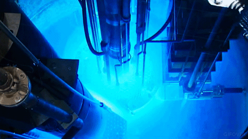

Это текст моей первой страницы
23 марта 1989 года Университет Юты сообщил в пресс-релизе, что «двое ученых запустили самоподдерживающуюся реакцию ядерного синтеза при комнатной температуре». Президент университета Чейз Петерсон заявил, что это эпохальное достижение сравнимо лишь с овладением огнем, открытием электричества и окультуриванием растений. Законодатели штата срочно выделили $5 млн на учреждение Национального института холодного синтеза, а университет запросил у Конгресса США еще 25 млн. Так начался один из самых громких научных скандалов XX века. Печать и телевидение мгновенно разнесли новость по миру.Это гиперссылка на сайт Консорциума Всемирной паутины 
Цену товаров компании "QWERTY ™" необходимо пересчитать с учетом курса € к £ ± наценка для региона